Project "MOONs"
Collision avoidance with priority assignement
Dominique Tao, Denis Gillet
EPFL
Table of content
-
Introduction
Spectograph, Moons, definition...
-
Potential field and navigation functions
-
Priority & Deadlocks
Massive Spectographs survey
-
Spectographs using massive fiber bundles are the most advanced measurement methods.
- Various approach were proposed for fiber positioning !
-
Old-school spectographs
-
SDSS (Sloan Digital Sky Survey)
- Fibers manually plugged
-
AAT, LAMOST, FMOS
- Fiber plugged with one machine (XYZ machines)
-
SDSS (Sloan Digital Sky Survey)
-
Next-gen spectographs
-
DESI
(Dark Energy Spectographic Instrument; 5000 fibers) -
MOONS
(Multi-Object Optical and Near-infrared Spectrograph; 1000 fibers) - PFS (2400 fibers)
-
DESI
Next-gen spectographs: DESI, MOONs
- Optical fiber attached to a 2 DOF (degree of freedom) robot
- Robot share the same hexagonal working place
-
Goal:
Move the optical fiber to its unique assigned target
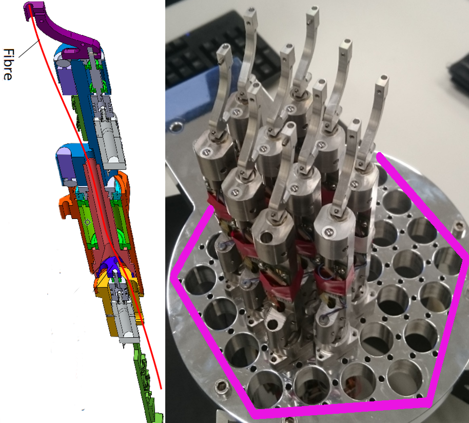
The Challenge !
For the robot positioners in movement, they need to:-
move fast
(re-position in less than 30 sec) - not collide
-
be accurate
(margin error fiber w.r.t. to target: 5 micron)
Table of content
-
Introduction
Spectograph, Moons, definition...
-
Potential field and navigation functions
-
Priority & Deadlocks
Potential field
-
Repulsive force from other positioners
-
Attractive force from the target
Problem: Local minima (concave structure) / deadlock
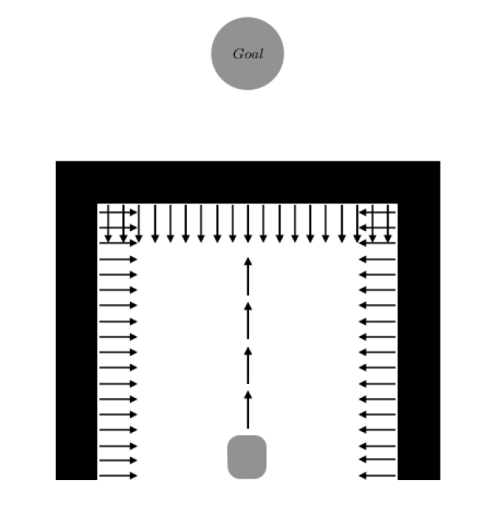
Solution: Decentralized Navigation Function
-
Family of potential function
-
Garantee, under certains criterias, collision and deadlock avoidance for multi-coordination robot
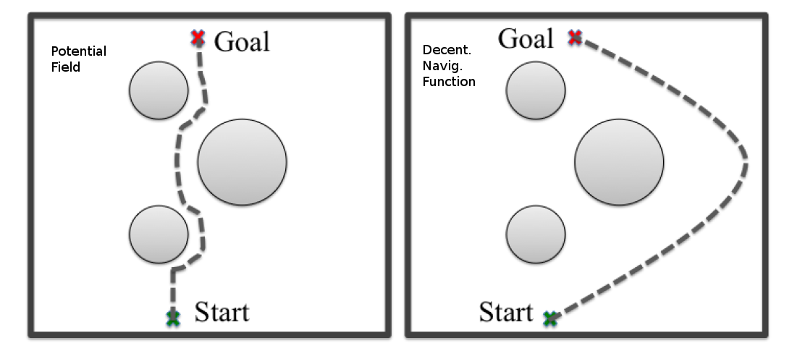
DESI vs MOONs
-
Works for DESI
-
Does not work for MOONs
- Not Complete (doesn't always converge to the target)
- Difference in second arm length (2 x DESI's one) increases the risk of collision
Decentralized navigation function:
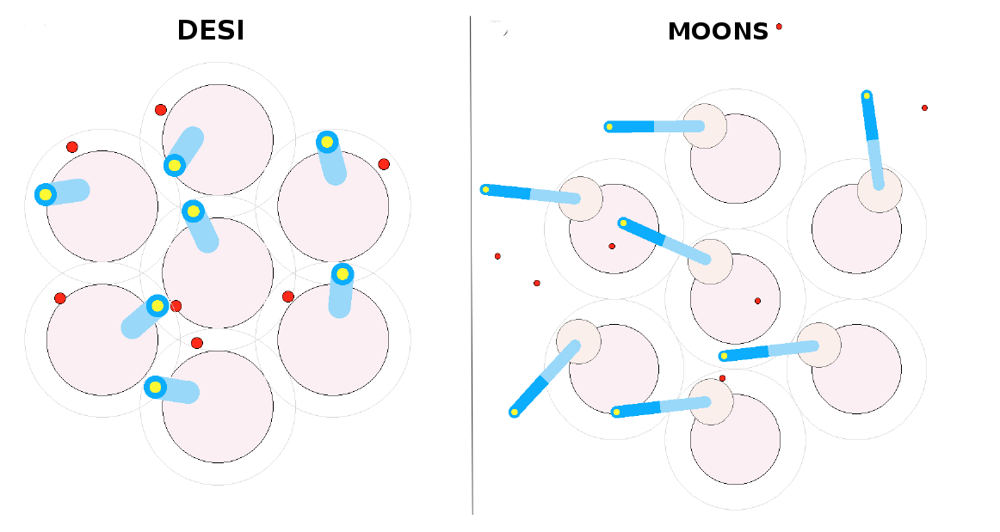
higher risk of collision
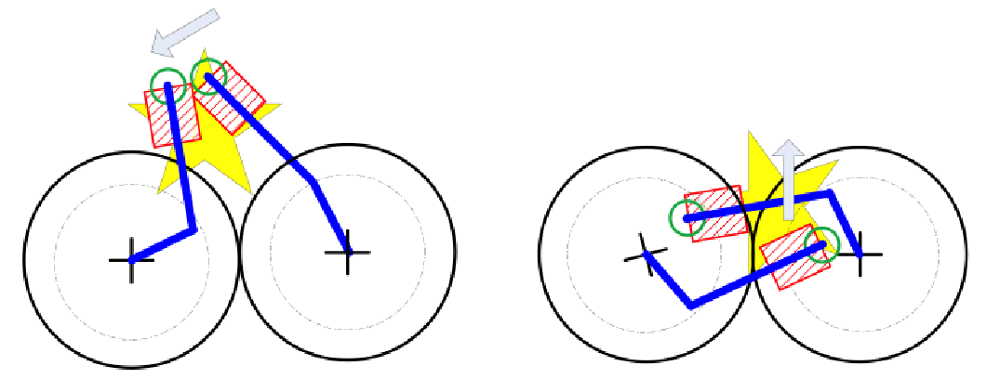With Moons Configuration
Table of content
-
Introduction
Spectograph, Moons, definition...
-
Potential field and navigation functions
-
Priority & Deadlocks
My missions:
-
Coordinate positioners' movements with priority
-
Why ?
Some galaxies are more important to observe
-
Why ?
- Reduce the deadlocks (From Optimisation to completness)
In MOONs framework:
Priority: The Origins
- Prior to assignement, priority is read from OPS file
- Each positioner get a priority ranging from 1 to 4 (integer)
- The higher the priority, the more important the target need to be reachded by the fiber
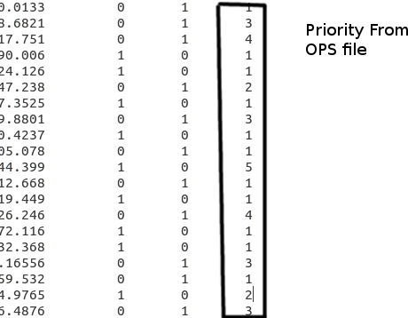
Priority and positioner
- The zone of influence (of the potential field)
- Repulsion force from the neighbours
- Attractive force to the target
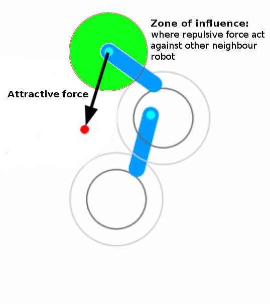
Zone of influence and force With priority
Not enough to solve the problem !
Finite state machine
-
Assignement of a Status to each positioner :
status = [ON/OFF, ID, Pr., Infl, Layer]
-
ON/OFF, ID, Pr.
"Intregration of priority" decision -
Infl, Layer
"Solving deadlock" decision

Status: [ON/OFF, ID, Pr., Infl, Layer]
-
ON/OFF
For two positioner "ON", whithin the influence zone:
- the positioner with the lowest priority is turn OFF
- the OFF positioner has no acttractive force
- return to ON when outside the influence zone
Status: [ON/OFF, ID, Pr., Infl, Layer]
-
"ID" & "Pr."
Within the influence zone, when two positioners are ON and OFF-
"ID":
The positioner ID that put it OFF -
"Pr":
- The priority of the ON positioner that put it OFF
- The "status.Pr" of the OFF positioner that put it OFF
-
"ID":
The road so far !!!
Target: oscillation Problem
-
Too big Zone of influence
-
ON/OFF endless loop:
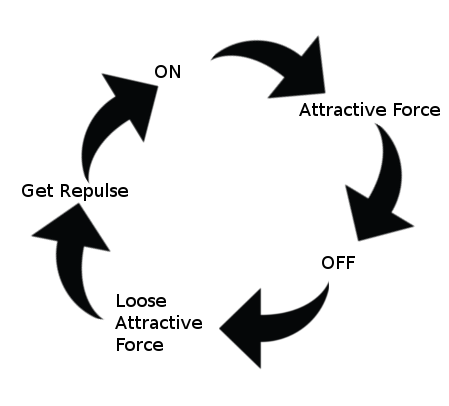
Problem:
Status: [ON/OFF, ID, Pr., Infl, Layer]
- creation of "OFF-zone of influence" < normal zone of influence
-
Infl:
- Unable the "arrived-at-the-target" positioner to affect the status of others
Solution to the target oscillation:
Until now, different priorities...
But what if neighbour positioners have the same priority ???
Deadlock...
- How to localize deadlocks ?
- How to correct them ?
Deadlocks ? What ? When ? How?
-
"A state of inaction or neutralization resulting from the opposition of equally powerful uncompromising persons or factions"
- Merriam Webster - In our case, deadlocks ususally happens with/because of two same priority positioners(left video) or with complex mechanical configuration (right video) !
1st Deadlocks localization: velocity
-
An moving average filter operates on the velocity of each positioner.
The Equation of the moving average filter is defined as: \[ y[i]=\frac{1}{M}\sum_{k=1}^n x[i+j] \] M : Number of point in the average
x[]: The input signal
y[]: The output signal
-
"Possibility of deadlocks" are localize with a velocity threshold:
constMin: the velocity (measured)of the positioners oscillating
Unlock deadlock: noise
- Add noise with Average moving filter
- But... not enough to solve all the deadlocks ...
2nd Deadlocks localization
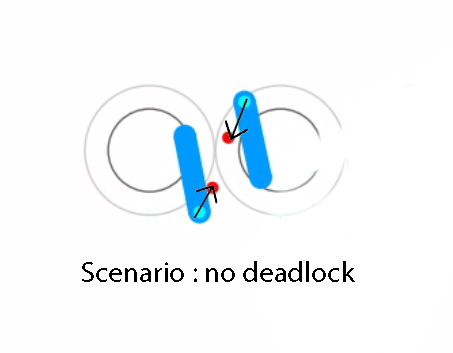
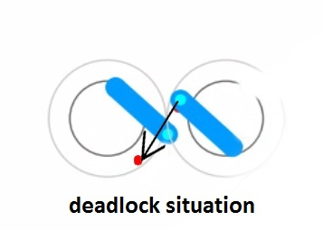
Deadlocks localization
-
To localise a deadlock:
- The two positioners need to be at a certain distance from each other
-
Using the sliding mean velocity window on their velocity :
Their mean velocity need to be under a certain threshold (because when deadlock, positioners do small oscillations) - Two positioners need to have the same priority !
Once deadlock localize: Deadlock solving strategy:
Deadlock solving strategy
-
Considering the agent positioner and its target, if an other "neighbour" positioner is:
- in the red side of the agent positioner==> not a problem
- in the green side of the agent positioner where its target is ==> can be a problem
-
By representing the two positioners (that create the deadlock) by vectors (from joint to end-effector):
we can create their orthogonal vectors which will be used to localize on which side (good(red) or bad (green))the other positioner and its target is!
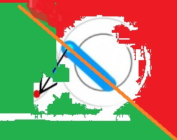
Deadlock solving strategy:scenario
- Deadlock usually happen when the neighbour positioner is on the bad (green) side of the agent positioner (where its target is)
-
A bigger priority is given to the positioner who need to bypass the "obstacle positioner (the one that is on the bad (green) side) of the agent positioner" to go to its target !
AND the positioner that has a smaller priority is repulsed by the target of the positioner with the higher priority! - If each other positioner are on the bad side of the other one: use biggest distance to their target to give the bigger priority !
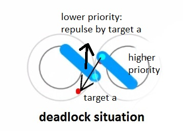
solve deadLock : Status: [ON/OFF, ID, Pr., Infl, Layer]
-
Layer:
- Isolate the deadlock problem by constructing a "upper" layer where the positioners from the lower layer have the priority over them
- Avoid further deadlock situations by not getting the others neighbour positioners involved into the deadlock problem (goal avoid propagation of the deadlock situation)
solve deadLock
-
Undo deadlock:
-
It moves until the "vector problem" is solved:
Two vectors from the positioner that has the priority over the other are constructed- (back vector)From its end-effector to the other end-effector of the other positioner
- (green vector)From its end-effector its target
-
stopping criterion
- when the two vectors projected onto same line are opposite sign
-
It moves until the "vector problem" is solved:
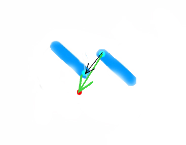
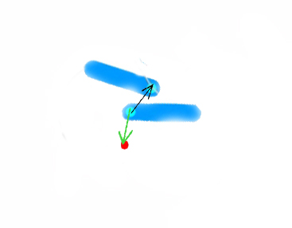
solve deadLock: some results
The 19 positioners ! : Before vs After
Conclusion
- Finish et test the previous heuristic approach
-
With the positioner's status, we created a "Local finite state machine"
- How about creating a "global finite state machine" to supervise and aim at global optimality ?